Itens
61 itens combináveis em 5 níveis de raridade, com os números reais de cada um. Nada de "aumenta o dano" — aqui é quanto. Raridades mais altas do mesmo item rolam mais forte, e a maioria melhora ainda mais se você empilhar cópias dele na mesma run.
Itens se acumulam durante a run em vez de substituir uns aos outros, então uma build nasce da combinação entre vários ativos ao mesmo tempo. Quanto mais raro o item, maior a chance dele vir com uma maldição pareada; em Épico e Lendário, é praticamente certo. Itens marcados com uma classe entre parênteses só aparecem no pool daquela classe.
| Item | Raridade | Efeito real | |
|---|---|---|---|
| Ferradura da Sorte | Comum | +6 de Sorte. | |
| Fôlego Curto | Comum | −15% na recarga do dash. | |
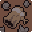 | Fragmento Veloz | Comum | +10% de velocidade de movimento. |
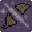 | Golpe Firme | Comum | +12% de dano corpo a corpo. |
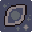 | Mira Firme | Comum | +10% de dano à distância. |
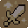 | Ritmo da Torre (Atirador) | Comum | −16% no intervalo entre disparos da torre (piso de −30%). |
| Aljava Marcada (Atirador) | Incomum | Acerto à distância aplica Vulnerável no alvo por 2,2s. | |
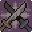 | Baluarte (Guardião) | Incomum | Com o escudo erguido, movimento sobe de 55% pra ~74% da velocidade normal; recarga pra reerguer a guarda cai 25%. |
| Cadência Arcana (Mago) | Incomum | −20% no cooldown do disparo da varinha (piso de −42%). | |
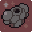 | Casca Firme | Incomum | +1 coração de vida máxima. |
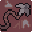 | Corrente | Incomum | 35% de chance por golpe corpo a corpo do acerto saltar pra outro inimigo a até 100 de distância, causando 75% do dano original. |
| Corte Sedento (Guerreiro) | Incomum | O primeiro alvo atingido por um Golpe Pesado cura 6 de vida. | |
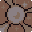 | Ecoante | Incomum | Projéteis ricocheteiam 2 vezes antes de se desfazer. |
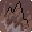 | Espinho Retido | Incomum | Ao levar dano, inimigos num raio de 100 ao seu redor tomam 12 de dano. |
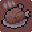 | Faminto | Incomum | 15% de chance por acerto corpo a corpo de curar 2 de vida. |
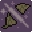 | Fenda Ampla (Guerreiro) | Incomum | +22° no arco do Golpe Pesado e +18 de alcance. |
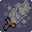 | Fio da Navalha | Incomum | +25% de dano à distância; −22% na recarga do dash (fica mais lenta). |
| Fôlego de Batalha (Atirador) | Incomum | −15% na recarga do dash. | |
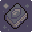 | Geada Persistente | Incomum | Acertos corpo a corpo aplicam Lentidão (25% de chance de também Atordoar); tiros aplicam Lentidão automaticamente. |
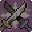 | Guarda Perfeita (Guardião) | Incomum | Janela de aparo perfeito sobe de 240ms pra ~372ms; cada aparo bem-sucedido cura 4 de vida. |
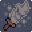 | Gume da Sentinela (Atirador) | Incomum | +22% de dano nas flechas da torre. |
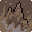 | Impacto | Incomum | Acertos corpo a corpo empurram o alvo com força 540. |
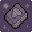 | Lâmina de Vento | Incomum | O dash gera uma hitbox de corte por 0,2s, causando 18 de dano em quem tocar. |
| Ninho de Setas (Atirador) | Incomum | +1 torre ativa simultânea (a base é 1). | |
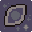 | Olho Paciente | Incomum | Tiros ficam mais fortes quanto mais tempo voam antes de acertar. |
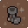 | Passo Firme | Incomum | −15% de dano recebido; −8% de velocidade de movimento. |
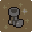 | Passo Leve | Incomum | O dash deixa você invisível pros inimigos por 500ms. |
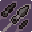 | Perfurante | Incomum | Tiros perfuram +1 inimigo extra antes de se desfazer. |
| Respiro | Incomum | 30% de chance por dash de curar 4 de vida. | |
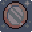 | Riposta (Guardião) | Incomum | Após bloquear ou aparar, o próximo acerto corpo a corpo causa 115% de dano bônus. |
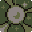 | Seiva da Torre (Atirador) | Incomum | As flechas da torre passam a aplicar Veneno. |
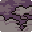 | Sopro Pútrido | Incomum | Tiros aplicam Veneno automaticamente (25% de chance de também Enfraquecer). |
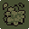 | Véu Etérico (Mago) | Incomum | +32% no raio de explosão da Bomba Espectral. |
| Amuleto do Acaso | Raro | +14 de Sorte. | |
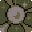 | Contágio | Raro | Acertar um inimigo com debuff copia todos os debuffs dele pro vizinho mais próximo, até 120 de raio. |
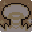 | Detonação | Raro | Tiros explodem num raio de 42, causando 60% do dano do projétil em área. |
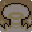 | Eco da Bomba (Mago) | Raro | Após a Bomba Espectral, os próximos 4 disparos ganham +45% de dano e perseguem o alvo. |
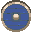 | Escudo de Cristal (Guardião) | Raro | Bloquear ou aparar revida automaticamente 14 de dano em quem atacou. |
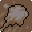 | Fúria | Raro | +30% de dano corpo a corpo; +18% de dano recebido. |
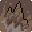 | Fusão de Espinho | Raro | Tiros se dividem em 2 projéteis extras ao acertar, cada um com 88% do dano original. |
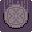 | Fusão Voraz | Raro | +meio coração de vida máxima; cada golpe corpo a corpo dispara um projétil com 38% do dano corpo a corpo. |
| Golpe Final | Raro | Acertos corpo a corpo executam inimigos comuns com até 13% da vida máxima. Chefes e minibosses são imunes. | |
| Guardião Errante | Raro | Invoca uma lâmina orbital que gira ao seu redor, causando 10 de dano a cada inimigo tocado. | |
| Gume Partido (Guerreiro) | Raro | O primeiro alvo atingido por um Golpe Pesado fica Vulnerável. | |
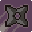 | Leque de Farpas | Raro | −15% no dano do tiro principal; cada disparo ganha +2 tiros extras em leque, 38% de dano cada. |
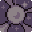 | Núcleo Estilhaçado (Mago) | Raro | A Bomba Espectral dispara 5 estilhaços em círculo, cada um com 55% do dano à distância. |
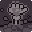 | Perseguidor Voraz | Raro | Projéteis passam a perseguir o alvo em pleno voo. |
| Peso da Culpa | Raro | Todo acerto causa +15% de dano bônus por debuff que o alvo já carrega. | |
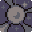 | Poço de Éter (Mago) | Raro | A Bomba Espectral deixa uma poça no chão por 2,6s, causando 6 de dano a cada 0,45s a quem ficar dentro. |
| Pulso Vital | Raro | Cura 6 de vida a cada 6 segundos, pelo resto da run. | |
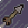 | Salva Teleguiada | Raro | Cada disparo lança +2 dardos teleguiados mirando nos inimigos mais próximos, 28% de dano cada. |
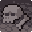 | Sangue Frio | Raro | +28% de dano à distância; −12% de velocidade de movimento. |
| Segunda Vida | Raro | Uma vez por run, sobrevive a um golpe fatal e volta com 50% da vida máxima. | |
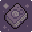 | Sombra Leal | Raro | Invoca um minion que luta sozinho, causando 10 de dano por golpe. |
| Torre Gêmea (Atirador) | Raro | Cada disparo da torre solta +1 flecha extra. | |
| Veneno Latente | Raro | Acertos corpo a corpo aplicam Veneno (30% de chance de também aplicar Lentidão). | |
| Fome de Guerra | Épico | Cada abate acumula 1 pilha de Fome (até 5); cada pilha dá +2% de dano corpo a corpo/à distância (até +10% no teto). Mostra um contador no HUD. | |
| Fúria Crescente | Épico | Acertos corpo a corpo com combo ativo causam +2% de dano bônus por ponto de combo (até 10 pontos). | |
| Marca Convergente | Épico | Cada acerto aplica uma marca; ao acumular 3 no mesmo alvo, elas explodem causando +110% de dano bônus. | |
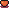 | Coração Imortal | Lendário | Uma vez por run, sobrevive a um golpe fatal e volta com 55% da vida máxima. |
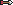 | Fio do Destino | Lendário | Acertos à distância com combo ativo causam +3,5% de dano bônus por ponto de combo (até 12 pontos). |
A maioria dos efeitos acima melhora ainda mais ao pegar cópias extras do mesmo item na mesma run (os números listados são o valor de uma única cópia, na rolagem padrão de raridade). "Ritmo da Torre", "Gume da Sentinela", "Ninho de Setas", "Seiva da Torre" e "Torre Gêmea" reaproveitam o ícone de outro item — o jogo ainda não tem arte própria pra eles.